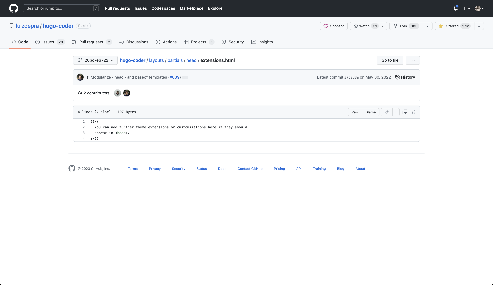
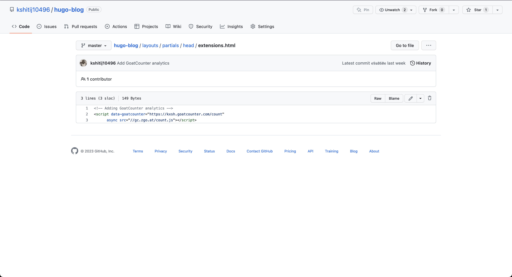

This blog is tracked with GoatCounter. It’s a minimalist, privacy respecting, open source web analytics tool. Here is my small adventure into adding the tool into the blog.
Why did I add a tracker? Link to heading
I discovered GoatCounter on a random HackerNews post earlier this week. Eventually, I landed on GoatCounter’s Design. I appreciate the focus on simplicity, pragmatism, and keeping things boring. This convinced me to try out GoatCounter.
How to add the GoatCounter tracker to a Hugo site? Link to heading
Like most trackers, I needed to add a simple HTML tag to every page on the site. This tag runs some JavaScript code on the visitors’ browser.
It seems pretty straightforward if this site were built by vanilla HTML. However, I use Hugo as my static site generator tool with a custom theme. And, I didn’t know how to add custom HTML to either Hugo or to the custom theme. So I started digging.
Hugo uses inheritance for building the final HTML from different HTML templates (Hugo template, theme tempalte, custom HTML from user) one top of the other. There is also a specific template lookup order with all the information about this process. Essentially, in order to add custom HTML to our site using a Hugo theme, we have to create a new file in our project. The important note here is to create the file at a proper location to leverage Hugo’s inheritance. This part is a bit tricky to debug because we lack observability into why our HTML is not loaded. The template lookup order comes in handy in these cases.
For my case, it meant creating the file under layouts/partials/head directory as extensions.html.


You can find the source code on github.com/kshitij10496/hugo-blog.
In retrospect, the integration process was a bit trickier that I first imagined.
Now Link to heading
I adore the retro, 90s web design of the hosted dashboards. The color palette and fonts are just perfect. More importantly, it gets the job done. It’s extremely efficient for 30 mins of setup work.
If you would like not to be tracked on this site, you have a couple of options:
- Use a browser extension that blocks trackers. (suggestion: Adblock Plus)
- Reach out to me over social media (or in private) and I will disable the tracker.